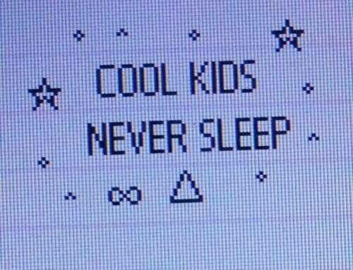

Que site é esse?
Esse site foi construído no curso de Criação de Sites e Plataformas do Novotec, realizado na Fatec Araras entre março e julho de 2022. Aqui você encontra informações sobre quem sou e os trabalhos realizados. Esse site foi construído no Figma, onde foram projetadas as telas e desenvolvido no Visual Studio Code, onde foi escrito o código HTML e CSS.
